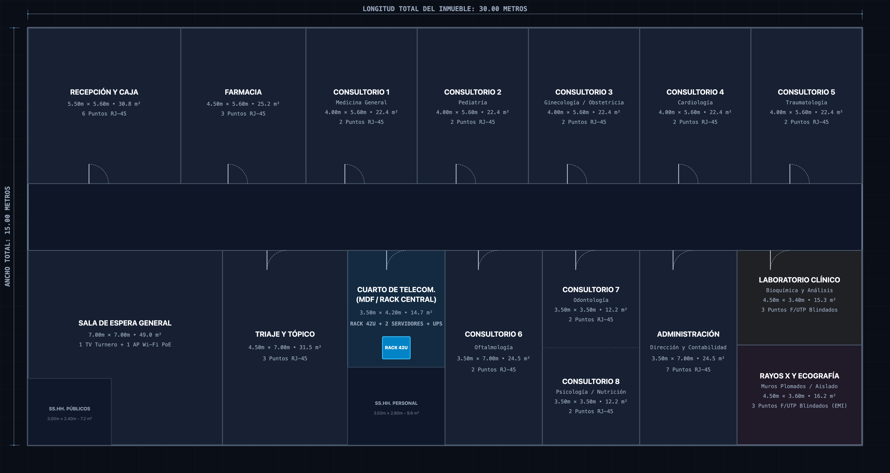
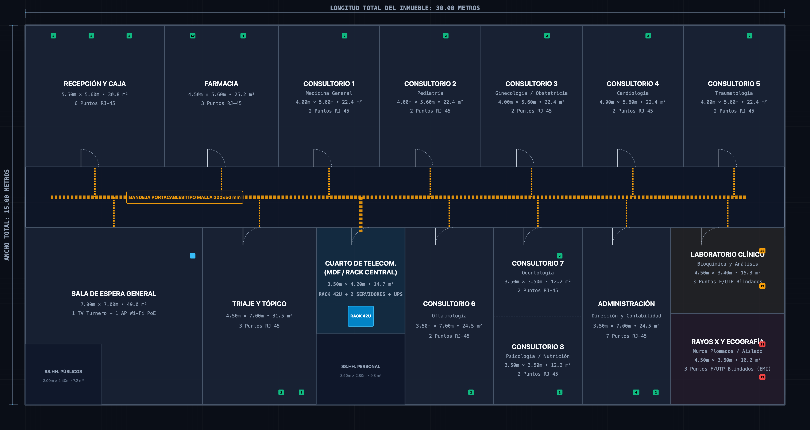

UNIVERSIDAD NACIONAL JORGE BASADRE GROHMANN
FACULTAD DE INGENIERÍA • ESCUELA PROFESIONAL DE INGENIERÍA EN INFORMÁTICA Y SISTEMAS
CURSO: REDES DE COMPUTADORAS I (REDES I) • UNIDAD I
DEFENSA TÉCNICA DE PROYECTO DE INGENIERÍA
Diseño de la Infraestructura Física y Cableado Estructurado LAN
Caso de Estudio: Policlínico de Especialidades Médicas «Salud & Vida S.A.C.»
ANSI/TIA-568-C.2
ANSI/TIA-569-D
ANSI/TIA-606-B
ANSI/TIA-607-B
IEEE 802.3ab / ax
Docente: Mg. REYNALDO ALFONTE ZAPANA
Tacna, Perú • Octubre 2026
Cachicatari Quito, Aron Rene
2024-119011
Banchello Pino, Raul Farid
2024-119009
Nina Estuco, William Andre
2024-119006
Mamani Lima, Josue Fernando
2025-19055
Briceño Pihuaycho, Fernando
2024-119029
Punto de Partida • Levantamiento Civil
¿Cómo Llega el Proyecto? El Plano Civil Vacío
Edificación civil de 450 m² sin infraestructura estructurada de comunicaciones

Diagnóstico de Partida
1
Espacio civil entregado: Recinto de planta única (450 m²) con tabiquería de ladrillo, 14 ambientes médicos/administrativos y un pasillo central de tránsito.
2
Cero infraestructura de red: No existen canalizaciones aéreas, bandejas ni centro de cómputo designado. Cables Cat 5e precarios tirados en el piso expuestos a camillas.
3
Objetivo de ingeniería: Diseñar desde cero el cableado horizontal, vertical, canalizaciones y sala MDF bajo normas ANSI/TIA para soportar operación médica crítica 24/7.
450 m²
Superficie útil
14
Ambientes clínicos
0
Canalizaciones previas
Análisis de Requerimientos • Carga de Red
Dimensionamiento Normativo de Puntos de Red
Cuantificación de puestos clínicos y tomas dobles bajo norma ANSI/TIA-568
Inventario Clínico por Áreas de Trabajo (WA)
| Área / Ambiente | Dispositivos a Conectar | Tomas RJ45 |
|---|---|---|
| Consultorios 1 al 6 | PC Historia Clínica (EMR) + Teléfono VoIP + Impresora | 12 tomas (2 c/u) |
| Rayos X y Tomografía | Estación DICOM + Consola PACS + Visor Alta Res. | 4 tomas Cat 6A |
| Laboratorio y Toma Muestras | Analizadores bioquímicos Ethernet + PCs analistas | 6 tomas Cat 6 |
| Admisión, Farmacia y Tópico | Cajas de cobro, dispensación y triaje continuo | 10 tomas Cat 6 |
| Dirección y Administración | Gerencia médica, contabilidad y EMR central | 8 tomas Cat 6 |
| Infraestructura (APs y CCTV) | 2 APs Wi-Fi 6 (PoE+) + 6 Cámaras IP Seguridad | 8 tomas PoE+ |
Justificación de Capacidad
-
Regla de oro TIA-568: Mínimo 2 tomas de telecomunicaciones por cada Área de Trabajo (WA) individual.
-
Tomas activas calculadas: 48 puntos físicos de red requeridos para operación inmediata del policlínico.
-
Margen de crecimiento (20%): 8 tomas de reserva estratégica = 56 puertos totales planificados.
-
Selección de conmutación: 2 Patch Panels de 24 puertos (48 puertos en rack) + 1 Switch de 48 puertos PoE+ Gigabit administrable.
48
Tomas activas
8
Tomas de reserva
2x24p
Patch panels 1U
Diseño en Planta • Primera Etapa
Plano 1: Emplazamiento de Tomas RJ-45 y Bandeja Aérea
Ruteo troncal por pasillo central y distribución perimetral bajo ANSI/TIA-569-D

Justificación de Rutas Físicas
1
Tomas RJ-45 en pared: Doble jack por estación instalado a 0.30 m s.n.p.t. en oficinas y 1.20 m sobre mesadas de laboratorio y tópicos.
2
Troncal aérea tipo malla: Bandeja electrosoldada de 150×50 mm suspendida a 2.80 m s.n.p.t. a lo largo del pasillo central.
3
¿Por qué el pasillo central?: Espacio común que permite mantenimiento e inspección sin ingresar ni interrumpir las consultas médicas privadas.
4
Bajadas por canaleta de PVC: Canaleta de dos vías con tabique interno para separar datos de energía estabilizada (TIA-569).
150×50
Bandeja malla (mm)
2.80 m
Altura de montaje
100%
Zona no médica
Arquitectura Lógica y Física • Topología
Topología en Estrella Jerárquica Colapsada
Centralización en Rack 42U con uplinks SFP+ de 10 Gbps (Fin a la cascada)
Justificación de Arquitectura
-
Fin a las cascadas: En la red precaria anterior, encadenar switches multiplicaba el tráfico broadcast y creaba cuellos de botella severos.
-
Aislamiento de puerto: Una falla o cortocircuito en el cable del Consultorio 2 queda confinada a su puerto de switch sin afectar el resto del policlínico.
-
Enlace a Servidor PACS: Ancho de banda de 10 Gbps SFP+ directo al almacenamiento de imágenes radiológicas.
10 Gbps
Uplinks SFP+ DAC
1000 Mbps
Gigabit en puesto
Especificación de Materiales • Capa Física
Selección del Medio: Cable UTP Cat 6 LSZH
Rendimiento eléctrico a 250 MHz y protección de vida contra gases tóxicos
Rendimiento Eléctrico (TIA-568-C.2)
-
250 MHz de ancho de banda: 2.5 veces la capacidad de Cat 5e (100 MHz), permitiendo Gigabit real (1000BASE-T).
-
Separador interno (Spline): Cruceta plástica central que mantiene los 4 pares trenzados separados físicamente.
-
Margen NEXT > 35.3 dB: Garantiza que la diafonía entre pares no corrompa tramas Ethernet clínicas.
250 MHz
Frecuencia nominal
23 AWG
Calibre de cobre puro
Seguridad de Vida Humana (Chaqueta LSZH)
-
Peligro del PVC tradicional: Al arder emite gas cloro que reacciona con la humedad y forma ácido clorhídrico tóxico.
-
Norma IEC 60332-1 / 60754-1: La cubierta LSZH (Low Smoke Zero Halogen) no emite humos negros opacos ni halógenos.
-
Protección a pacientes: Indispensable en centros de salud con pacientes postrados que no pueden evacuar rápidamente.
0%
Halógenos tóxicos
> 60%
Transmitancia óptica
Geometría de Planta • Cuarto Técnico
Ubicación del MDF: Centro de Gravedad de Cableado
Distancia máxima de 34.8 m, operando a solo el 38.6% del límite de 90 m (ANSI/TIA-568)
Sustentación de Ubicación
-
Cálculo del baricentro de enlaces: La sala MDF se ubica contigua a Administración en el centro exacto del tendido horizontal.
-
Tirada máxima medida: El enlace más lejano (Consultorio 6) mide 34.8 metros de enlace permanente.
-
Límite normativo TIA-568: 90 metros para el cableado horizontal fijo.
-
Margen del 61.4%: La señal sufre una atenuación mínima (< 7 dB) y un retardo de propagación imperceptible.
34.8 m
Tirada máxima
90.0 m
Límite TIA-568
38.6%
Uso del límite
Infraestructura de Cuarto Técnico • ANSI/TIA-569
Gabinete Rack 42U, Respaldo UPS y Climatización
Centralización modular 1U/1U, energía ininterrumpida de 3 kVA y control térmico
Criterios de Montaje y Respaldo
-
Esquema alternado 1U/1U: Cada Patch Panel tiene un pasahilos horizontal contiguo para evitar cruces y respetar el radio de curvatura (≥ 4 veces el diámetro del cable).
-
UPS Online Doble Conversión 3 kVA: 0 ms de tiempo de transferencia. Garantiza 45 min de autonomía para guardar historias clínicas si se corta la energía.
-
Climatización ASHRAE / TIA-942: Aire acondicionado Split de 12,000 BTU manteniendo temperatura estable entre 18°C y 22°C.
42U
Altura de bastidor
3 kVA
UPS Online
20°C
Climatización
Zona Crítica • Foco Electromagnético
Caso Crítico: Sala de Rayos X e Inmunidad EMI
Fundamentación matemática mediante el Teorema de Shannon-Hartley y blindaje F/UTP
Fundamento Físico-Matemático
C = B · log2(1 + S / N)
Cuando el equipo de Rayos X emite disparos de 100 kV y 500 mA, el ruido electromagnético parásito (N) crece exponencialmente.
Si S/N colapsa, la capacidad C cae por debajo de la tasa requerida y las imágenes DICOM (120 MB) sufren timeouts continuos.
Protección Frente a Descargas de 100 kV
-
Cable F/UTP Cat 6A apantallado: Lámina de aluminio y poliéster que actúa como jaula de Faraday continua alrededor de los 4 pares.
-
Atenuación EMI ≥ 40 dB: Absorbe los transitorios y deriva las corrientes inducidas por el hilo de drenaje a tierra.
-
Puesta a tierra TIA-607-B: Conexión del blindaje a la barra TGB del cuarto MDF con impedancia certificada < 5 Ω.
-
Separación física > 300 mm: Canalizado por ducto metálico alejado de los cables trifásicos del generador de rayos X.
≥ 40 dB
Blindaje de lámina
< 5 Ω
Resistencia a tierra
< 1.2 s
Apertura DICOM
Ingeniería Consolidada • Rutas Finales
Plano Integral de Red y Codificación TIA-606-B
Trazado consolidado de canalizaciones troncales, tomas de datos y etiquetado normativo

Etiquetado y Trazabilidad
-
48 enlaces consolidados: Tendido radial directo desde el MDF hacia cada uno de los 14 ambientes clínicos.
-
Nomenclatura ANSI/TIA-606-B: Identificador unívoco
P1-PP1-XX(Piso 1, Patch Panel 1, Puerto XX) rotulado en ambos extremos del cable y en el faceplate. -
Código de colores hospitalario: Azul para datos clínicos/EMR, Blanco para VoIP, Amarillo para cámaras CCTV, Verde para imágenes DICOM blindadas.
48
Puntos rotulados
100%
Trazabilidad TIA-606
Conectividad Inalámbrica • IEEE 802.11ax
Infraestructura Wi-Fi 6 de Grado Médico
2 Access Points empresariales en 5 GHz con celdas de 8 m y Fast Roaming (802.11k/v/r)
Diseño de Red Inalámbrica
-
AP-01 (Público / Alta Densidad): En sala de espera. Utiliza OFDMA y MU-MIMO para atender hasta 60 pacientes concurrentes en la VLAN 30 (Invitados).
-
AP-02 (Médico / Rondas Clínicas): En pasillo médico. Conecta tablets de médicos y carritos hospitalarios a la VLAN 10 (Médica) con seguridad WPA3-Enterprise.
-
Fast Roaming 802.11k/v/r: Los médicos caminan entre consultorios sin experimentar corte de sesión ni pérdida de datos en la historia clínica.
Wi-Fi 6
802.11ax
< 50 ms
Handover Roaming
WPA3
Cifrado Enterprise
Aseguramiento de Calidad • Medición de Campo
Protocolo de Certificación Fluke Networks DSX-8000
Validación paramétrica del 100% de los enlaces permanentes según ANSI/TIA-568-C.2
Parámetros de Enlace Permanente
| Parámetro Evaluado | Límite TIA-568 | Medido (34.8m) | Margen |
|---|---|---|---|
| Insertion Loss (IL) | ≤ 31.1 dB | 6.8 dB | +24.3 dB |
| NEXT (Diafonía Cercana) | ≥ 35.3 dB | 48.2 dB | +12.9 dB |
| Return Loss (RL) | ≥ 10.0 dB | 18.5 dB | +8.5 dB |
| Delay Skew | ≤ 45 ns | 14 ns | +31 ns |
Garantía Operativa de Red
-
100% de enlaces con estado PASS: Ningún punto de red quedó con fallas ni margen crítico de tolerancia (*PASS).
-
Certificación de Enlace Permanente: Medición realizada excluyendo los patch cords de prueba para certificar el cable horizontal instalado en ductos.
-
Garantía de rendimiento: Operación a 1000 Mbps sin retransmisiones TCP ni latencias en consultas de historias clínicas EMR.
48 / 48
Enlaces PASS
+12.9 dB
Margen NEXT
Cat 6
Norma Certificada
Diagnóstico Físico • Integridad de Cableado
La Trampa del Split Pair (Par Dividido)
Por qué un comprobador básico de continuidad engaña y cómo se garantiza el estándar T568B
Análisis de la Falla Oculta
-
El engaño del tester básico: Como cada hilo de cobre conduce electricidad de extremo a extremo, el tester barato enciende todos los LEDs verdes y da un falso OK.
-
Catástrofe electromagnética: Al mezclar hilos de pares distintos, se pierde la cancelación de campos electromagnéticos por trenzado diferencial.
-
Estandarización T568B: Se implementa rigurosamente el código de colores oficial en los 48 enlaces y se verifica con reflectometría TDR en el Fluke.
T568B
Norma de ponchado
TDR
Detección de par
Viabilidad Económica • Sustentación Física
Cuadro de Materiales (BOM) y Muestra Física
Inversión total de USD $9,632 y componentes reales presentados en mesa
Inversión de Infraestructura (USD $9,632)
| Partida / Componente | Descripción Técnica | Costo (USD) |
|---|---|---|
| Cableado Horizontal | UTP Cat 6 LSZH + F/UTP Cat 6A (Bobinas) | $1,840 |
| Gabinete Rack 42U | Rack cerrado, PDU con voltímetro, bandejas | $1,120 |
| Switch Administrable | 48p PoE+ Gigabit + 4 uplinks 10G SFP+ | $2,450 |
| UPS Online 3 kVA | Doble conversión, autonomía 45 min | $1,890 |
| Canalizaciones | Bandeja malla 150×50 + canaleta PVC 2 vías | $1,282 |
| Certificación y Accesorios | Calibración Fluke, rotulado TIA-606-B | $1,050 |
$9,632
Inversión Total (BOM)
10 Años
Vida útil estimada
Muestra Física de Sustentación en Mesa
-
Patch Cord Cat 6 LSZH: Muestra certificada de fábrica con bota de protección inyectada y chaqueta no propagadora de llama.
-
Jack Keystone RJ45 Cat 6: Contactos con baño de oro de 50 μin y bloque de conexión tipo 110 ponchado bajo norma T568B.
-
Faceplate con ventana de rotulado: Placa plástica con etiqueta normalizada bajo código ANSI/TIA-606-B.
¡Gracias por su atención!
Quedamos a entera disposición del jurado para la ronda de preguntas técnicas.
00 / 13
Pulsa 'F' para pantalla completa • Clic o → para avanzar